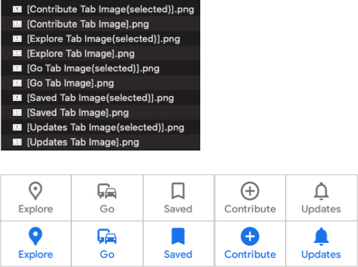

Cropping images for template matching
When you want to use template matching(image matching), you have to prepare image files in advance. You can use cropImage function for capturing and saving image of specified element.
Cropping sample
CroppingImages1.kt
(kotlin/tutorial/inaction/CroppingImages1.kt)
package tutorial.inaction
import org.junit.jupiter.api.Test
import shirates.core.configuration.Testrun
import shirates.core.driver.TestElement
import shirates.core.driver.commandextension.*
import shirates.core.driver.rootElement
import shirates.core.logging.TestLog
import shirates.core.testcode.UITest
import shirates.core.utility.toPath
import java.nio.file.Files
import java.nio.file.StandardCopyOption
@Testrun("testConfig/android/maps/testrun.properties")
class CroppingImages1 : UITest() {
@Test
fun croppingMapsImages() {
scenario {
case(1) {
condition {
it.macro("[Maps Top Screen]")
.screenIs("[Maps Top Screen]")
.wait() // wait for animation to complete
}.action {
rootElement.cropImage("[Maps Top Screen].png")
it.select("[Explore Tab]").cropAndCopy("[Explore Tab Image(selected)].png")
it.select("[Go Tab]").cropAndCopy("[Go Tab Image].png")
it.select("[Saved Tab]").cropAndCopy("[Saved Tab Image].png")
it.select("[Contribute Tab]").cropAndCopy("[Contribute Tab Image].png")
it.select("[Updates Tab]").cropAndCopy("[Updates Tab Image].png")
}
}
case(2) {
action {
it.tap("[Go Tab]")
.screenIs("[Maps Go Screen]")
.wait()
it.select("[Explore Tab]").cropAndCopy("[Explore Tab Image].png")
it.select("[Go Tab]").cropAndCopy("[Go Tab Image(selected)].png")
}
}
case(3) {
action {
it.tap("[Saved Tab]")
.wait() // wait for animation to complete
it.select("[Saved Tab]").cropAndCopy("[Saved Tab Image(selected)].png")
}
}
case(4) {
action {
it.tap("[Contribute Tab]")
.wait() // wait for animation to complete
it.select("[Contribute Tab]").cropAndCopy("[Contribute Tab Image(selected)].png")
}
}
case(5) {
action {
it.tap("[Updates Tab]")
.wait() // wait for animation to complete
it.select("[Updates Tab]").cropAndCopy("[Updates Tab Image(selected)].png")
}
}
}
}
private fun TestElement.cropAndCopy(fileName: String) {
this.cropImage(fileName = fileName)
val targetDir = "testConfig/android/maps/screens/images".toPath()
if (Files.exists(targetDir).not()) {
Files.createDirectory(targetDir)
}
val source = TestLog.directoryForLog.resolve(fileName)
val target = targetDir.resolve(fileName)
Files.copy(source, target, StandardCopyOption.REPLACE_EXISTING)
}
}
Cropping images
Above program select elements and crops images to file.
Cropped images

Using image matching
See Image Assertion